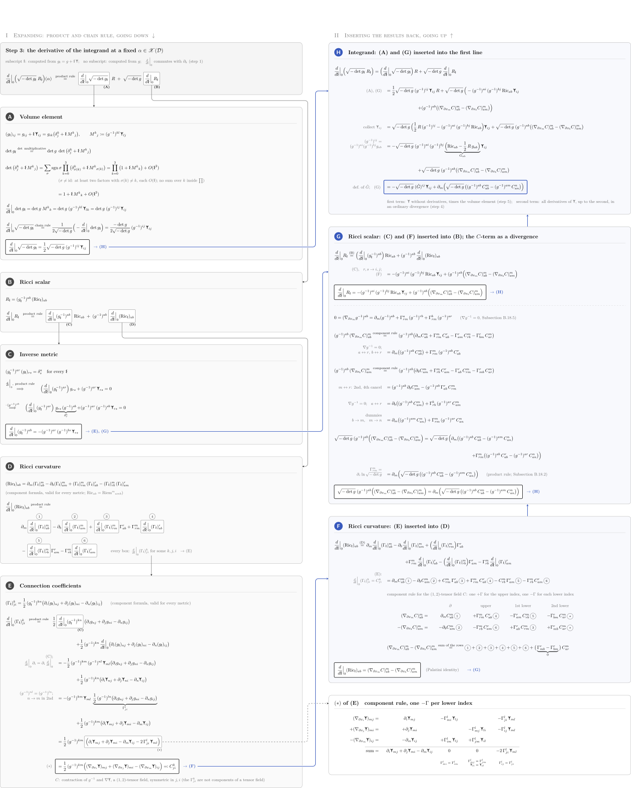

Chapter 10 • General Relativity
10.2 The Einstein Equations from an Action
Geodesics were obtained in Chapter 7 as the critical curves of the length, for a fixed metric. The Einstein equations arise in the same way, as the critical points of an action, with one essential difference: what is varied is now the metric itself. This section first makes precise what that means (Subsection 10.2.1), then carries out the variation step by step, following Appendices B.14 and B.15 (Subsection 10.2.2), and finally stops at the boundary terms produced by the integrations by parts, to decide when they vanish and when they matter (Subsection in preparation).
10.2.1 Varying the metric
What is fixed and what is varied. For geodesics, the whole metric manifold \((\mathcal{M}, \mathcal{O}, \mathcal{A}, g)\) was fixed, and the curves were varied. Here only \((\mathcal{M}, \mathcal{O}, \mathcal{A}^\uparrow)\) is fixed: the points, their topology, the smooth structure and the orientation, i.e. the stage on which a metric can be defined. The metric is the unknown, and the action is a function of it, \[ g \longmapsto S[g] \in \mathbb{R}, \] defined on the set of Lorentzian metrics on \(\mathcal{M}\). There is no background: every object in the integrand, i.e. the Levi-Civita connection, the curvatures and the volume density, is computed from the metric being tested, and changes with it. In particular, the connection is not varied independently; it follows the metric through the Levi-Civita theorem5.
Variations. As for curves, the metric is deformed along one-parameter families: for a symmetric \(\textrm{\runic ᛉ} \in \Gamma T^{(0,2)}\mathcal{M}\), whose values on the boundary of the region of integration are restricted in the next item, \[ g_{\textrm{\runic ᛊ}} \coloneqq g + \textrm{\runic ᛊ} \, \textrm{\runic ᛉ}, \qquad \textrm{\runic ᛊ} \in \mathbb{R} . \] Sums and real multiples of symmetric \((0,2)\)-tensor fields are again symmetric \((0,2)\)-tensor fields, so \(g_{\textrm{\runic ᛊ}}\) is one for every \(\textrm{\runic ᛊ}\). It need not be a Lorentzian metric (e.g. \(\textrm{\runic ᛉ} = g\), \(\textrm{\runic ᛊ} = -1\) gives \(g_{\textrm{\runic ᛊ}} = 0\)); step 1 of Subsection 10.2.2 shows that it is one for all \(\textrm{\runic ᛊ}\) in an interval \((-\textrm{\runic ᛊ}_0, \textrm{\runic ᛊ}_0)\), just as step 1 of Appendix B.14 shows that the deformed curves stay in the domain of the Lagrangian for \(|\textrm{\runic ᛊ}| < \textrm{\runic ᛊ}_0\). Since \(g\) and \(\textrm{\runic ᛉ}\) are tensor fields, the family \(g_{\textrm{\runic ᛊ}}\) does not depend on any chart, unlike the family \(\gamma_\mathcal{U} + \textrm{\runic ᛊ} \, \textrm{\runic ᛉ}\) of Chapter 7, which is defined through a chart representative of \(\gamma\). Every quantity \(F\) computed from \(g\) (a component function, \(\det g\), \(\Gamma\), \(\mathrm{Ric}\), \(R\), …) becomes, computed from \(g_{\textrm{\runic ᛊ}}\), a function \(F_{\textrm{\runic ᛊ}}\) of \(\textrm{\runic ᛊ}\), and its variation is \[ \delta F \coloneqq \frac{d}{d\textrm{\runic ᛊ}} F_{\textrm{\runic ᛊ}} \Big|_{\textrm{\runic ᛊ} = 0}, \qquad \text{e.g.} \qquad \delta g_{ij} = \textrm{\runic ᛉ}_{ij} . \] Being a derivative w.r.t. \(\textrm{\runic ᛊ}\), \(\delta\) obeys the product and chain rules, and, since the \(F_{\textrm{\runic ᛊ}}\) are smooth in \(\textrm{\runic ᛊ}\) and the coordinates together (step 1), it commutes with \(\partial_k\) by Schwarz’s theorem.
What is held fixed: boundary data. For curves, the endpoints were fixed, and, for Lagrangians of order \(k\), also the first \(k - 1\) derivatives there (Appendix B.15). Here the role of the interval \([a, b]\) is played by an open region \(\mathcal{D} \subseteq \mathcal{M}\) whose closure \(\overline{\mathcal{D}}\) is compact and contained in a chart domain, as for the integrals of Section 8.26, and that of the endpoints by its boundary \(\partial \mathcal{D}\), a 3-dimensional hypersurface. The action only integrates over \(\mathcal{D}\), and the deformation is required to vanish on \(\partial \mathcal{D}\) together with its first derivatives (Figure 10.2):
inside \(\mathcal{D}\), the metric is deformed, \(g_{\textrm{\runic ᛊ}} = g + \textrm{\runic ᛊ} \, \textrm{\runic ᛉ}\);
on \(\partial \mathcal{D}\), \(\textrm{\runic ᛉ} = 0\) and its first derivatives vanish, so the metric and its first derivatives are the same for every member of the family;
outside \(\mathcal{D}\), \(\textrm{\runic ᛉ}\) need not vanish, but the action does not see it.
Since \(R\) contains second derivatives of \(g\), the action is of order \(k = 2\), and these are exactly the boundary conditions of the appendix: the metric and its first derivatives are prescribed on \(\partial \mathcal{D}\), and the field equations should determine \(g\) inside. A typical \(\mathcal{D}\) lies between an initial and a final spacelike hypersurface and inside a timelike “wall”; holding \(g\) fixed on these is the analogue of holding fixed the initial and final positions of a particle. Deformations vanishing on a whole neighbourhood of \(\partial \mathcal{D}\), i.e. with compact support in \(\mathcal{D}\), are a special case. Whether it suffices to hold only the metric fixed on \(\partial \mathcal{D}\), without its derivatives, is the question of Subsection in preparation.
Critical, not minimal. As for geodesics, one only asks for metrics at which the action is stationary: \(\frac{d}{d\textrm{\runic ᛊ}} S[g_{\textrm{\runic ᛊ}}] \big|_{\textrm{\runic ᛊ} = 0} = 0\) for every admissible \(\textrm{\runic ᛉ}\). Restricting to regions with compact closure keeps \(S\) finite.
10.2.2 Variation of the Einstein–Hilbert action
Setting. \((\mathcal{M}, \mathcal{O}, \mathcal{A}^\uparrow, \nabla^{\text{LC}}, g, \textrm{\runic ᛏ})\) is a spacetime, \((\mathcal{U}, \mathscr{X}) \in \mathcal{A}^\uparrow\) a chart, and \(\mathcal{D} \subseteq \mathcal{U}\) an open set with \(\overline{\mathcal{D}}\) compact and contained in \(\mathcal{U}\). Only this chart is used, so its label is dropped: \(g_{ij} \coloneqq (g_\mathscr{X})_{ij}\), \(\det g \coloneqq \det g_\mathscr{X} < 0\)7. Every \(F \in C^\infty(\mathcal{U})\) is represented by \(F(\alpha) \coloneqq (F \circ \mathscr{X}^{-1})(\alpha)\), \(\alpha \in \mathscr{X}(\mathcal{U}) \subseteq \mathbb{R}^4\), and \(\partial_k F(\alpha) = \partial F(\alpha) / \partial \alpha^k\) (Chapter 4). The \(\Gamma^k_{ji}\) are those of \(\nabla^{\text{LC}}\), and components of covariant derivatives follow the rule of Chapter 6 (one \(+\Gamma\) per upper index, one \(-\Gamma\) per lower index).
Volume element. By (8.3) and Section 8.3, with \(\omega^g_\mathscr{X} = \sqrt{- \det g}\), \[ \int_\mathcal{D} \Omega^g F = \int_{\mathscr{X}(\mathcal{D})} d^4\alpha \, \sqrt{- \det g(\alpha)} \; F(\alpha) . \] The volume element is built from \(g\), and is varied with it.
Action. The Einstein–Hilbert action of \(\mathcal{D}\) is \(S_\mathcal{D}[g] \coloneqq \kappa \int_\mathcal{D} \Omega^g R\), with \(\kappa \coloneqq - 1/(16 \pi G_N)\)8.
Variations. The admissible variations are \(g_{\textrm{\runic ᛊ}} = g + \textrm{\runic ᛊ} \, \textrm{\runic ᛉ}\), with \(\textrm{\runic ᛉ} \in \Gamma T^{(0,2)}\mathcal{M}\) symmetric, \(\operatorname{supp} \textrm{\runic ᛉ}\) compact and contained in \(\mathcal{U}\)9, and \[ \textrm{\runic ᛉ}_{ij}(\alpha) = 0, \qquad \partial_k \textrm{\runic ᛉ}_{ij}(\alpha) = 0 \qquad \text{for all } \alpha \in \partial \mathscr{X}(\mathcal{D}) , \] a chart-independent condition: the metric and its first derivatives are held fixed on \(\partial \mathcal{D}\) (Subsection 10.2.1; dropping the derivatives: Appendix in preparation). Quantities computed from \(g_{\textrm{\runic ᛊ}}\) carry the subscript \(\textrm{\runic ᛊ}\); their variation is \(\delta F(\alpha) \coloneqq \frac{\partial}{\partial \textrm{\runic ᛊ}} F_{\textrm{\runic ᛊ}}(\alpha) \big|_{\textrm{\runic ᛊ} = 0}\), which commutes with \(\partial_k\) (Schwarz, by step 1).
Einstein curvature with raised indices. Feeding both slots of \(G\) through \(\flat^{-1}\), as for \(\mathrm{Riem}^\flat\) in Chapter 7, gives the symmetric \((2,0)\)-tensor field \(\hat{G}\) with \((\hat{G})^{ij} = (g^{-1})^{ia} \, (g^{-1})^{jb} \, G_{ab}\); \(\hat{G} = 0\) if and only if \(G = 0\).
Statement. For every admissible \(\textrm{\runic ᛉ}\), \[ \frac{d}{d\textrm{\runic ᛊ}} S_\mathcal{D}[g_{\textrm{\runic ᛊ}}] \Big|_{\textrm{\runic ᛊ} = 0} = - \kappa \int_\mathcal{D} \Omega^g \, (\hat{G})^{ij} \, \textrm{\runic ᛉ}_{ij} , \] and this vanishes for every admissible \(\textrm{\runic ᛉ}\) if and only if \[ \boxed{ G = \mathrm{Ric} - \frac{1}{2} R \, g = 0 \quad \text{on } \mathcal{D} , } \] the vacuum Einstein equations.
Strategy. As in Appendix B.14: (I) differentiate under the integral sign and apply the chain rule, now through \(g^{-1}\), \(\det g\), \(\Gamma\), \(\mathrm{Ric}\) and \(R\) (steps 1–3); (II) all derivatives of \(\textrm{\runic ᛉ}\) collect into a divergence, which integrates to zero by the boundary conditions (step 4); (III) \(\textrm{\runic ᛉ}\) being arbitrary, the remaining integrand vanishes at every point (step 5).
Proof.
The action is defined, and smooth in \(\textrm{\runic ᛊ}\), for small \(|\textrm{\runic ᛊ}|\). The integrand needs \(\det g_{\textrm{\runic ᛊ}} < 0\), for the square root and for \(g_{\textrm{\runic ᛊ}}^{-1}\): this plays the role of the domain \(D_\mathscr{X}\) of Appendix B.14. Outside \(\operatorname{supp} \textrm{\runic ᛉ}\), \(g_{\textrm{\runic ᛊ}} = g\). On the compact \(\mathscr{X}(\operatorname{supp} \textrm{\runic ᛉ})\), \(\det g_{\textrm{\runic ᛊ}} = \det g + \sum_{n=1}^{4} \textrm{\runic ᛊ}^n c_n\) with \(|c_n| \leq C\), and \(|\det g| \geq m > 0\); for \(|\textrm{\runic ᛊ}| < \textrm{\runic ᛊ}_0 \coloneqq \min(1, m / (4C))\), \(|\det g_{\textrm{\runic ᛊ}} - \det g| \leq 4 C |\textrm{\runic ᛊ}| < m\), so \(\det g_{\textrm{\runic ᛊ}} < 0\). Then \(g^{-1}_{\textrm{\runic ᛊ}}\) (Cramer’s rule), \(\Gamma_{\textrm{\runic ᛊ}}\), \(\mathrm{Ric}_{\textrm{\runic ᛊ}}\), \(R_{\textrm{\runic ᛊ}}\) and \(\sqrt{- \det g_{\textrm{\runic ᛊ}}}\) are smooth in \((\textrm{\runic ᛊ}, \alpha)\).
Differentiate under the integral sign. The \(\textrm{\runic ᛊ}\)-derivative of the integrand is continuous on the compact \([-\textrm{\runic ᛊ}_1, \textrm{\runic ᛊ}_1] \times \overline{\mathscr{X}(\mathcal{D})}\), \(0 < \textrm{\runic ᛊ}_1 < \textrm{\runic ᛊ}_0\), so \[ \frac{d}{d\textrm{\runic ᛊ}} S_\mathcal{D}[g_{\textrm{\runic ᛊ}}] \Big|_{\textrm{\runic ᛊ} = 0} = \kappa \int_{\mathscr{X}(\mathcal{D})} d^4\alpha \; \delta \Big( \sqrt{- \det g} \, R \Big)(\alpha) . \]
Chain rule. Carried out in Figure 10.3 (page 84) at a fixed \(\alpha\): (A)–(E) expand until only \(\textrm{\runic ᛉ}\) and its derivatives remain, (F)–(H) insert the results back. The outcome is \[ \delta \Big( \sqrt{- \det g} \, R \Big)(\alpha) = - \sqrt{- \det g} \; (\hat{G})^{ij} \, \textrm{\runic ᛉ}_{ij} + \frac{\partial F^m}{\partial \alpha^m} , \qquad F^m \coloneqq \sqrt{- \det g} \, \big( (g^{-1})^{ab} \, C^m_{ab} - (g^{-1})^{am} \, C^n_{an} \big) , \] with \(C^k_{ji} = \delta \Gamma^k_{ji} = \frac{1}{2} (g^{-1})^{km} \big( (\nabla_{\partial x_i} \textrm{\runic ᛉ})_{mj} + (\nabla_{\partial x_j} \textrm{\runic ᛉ})_{mi} - (\nabla_{\partial x_m} \textrm{\runic ᛉ})_{ij} \big)\), a \((1,2)\)-tensor field. \(\textrm{\runic ᛉ}\) appears undifferentiated only in the first term; all its derivatives sit in the divergence.
The boundary term vanishes. \(F^m\) is linear in the \(\textrm{\runic ᛉ}_{ij}\) and \(\partial_k \textrm{\runic ᛉ}_{ij}\), so it vanishes on \(\partial \mathscr{X}(\mathcal{D})\). Each line parallel to the \(\alpha^m\)-axis meets the bounded \(\mathscr{X}(\mathcal{D})\) in disjoint intervals \((a_n, b_n)\) with endpoints on \(\partial \mathscr{X}(\mathcal{D})\), so \[ \int_{\mathscr{X}(\mathcal{D})} d^4\alpha \, \frac{\partial F^m}{\partial \alpha^m} \overset{\text{Fubini}}{=} \sum_{m=0}^3 \int_{\mathbb{R}^3} d^3\alpha \, \sum_n \int_{a_n}^{b_n} d\alpha^m \, \frac{\partial F^m}{\partial \alpha^m} \overset{\substack{\text{fund.\ th.} \\ \text{of calculus}}}{=} \sum_{m=0}^3 \int_{\mathbb{R}^3} d^3\alpha \, \sum_n \Big( F^m \big|_{b_n} - F^m \big|_{a_n} \Big) = 0 . \] With steps 2–3, this proves the formula of the Statement. The action being of order \(k = 2\), the first derivatives of \(\textrm{\runic ᛉ}\) must also vanish on \(\partial \mathcal{D}\) (Appendix B.15).
From the integral to every point. (\(\Leftarrow\)) is immediate. (\(\Rightarrow\)): if \((\hat{G})^{kl}(\alpha_p) > 0\) for some \(\alpha_p \in \mathscr{X}(\mathcal{D})\) and \(k, l\) (if negative, use \(- \textrm{\runic ᛉ}\)), then \(\sqrt{- \det g} \, (\hat{G})^{kl} > 0\) on a ball \(B\), \(\overline{B} \subseteq \mathscr{X}(\mathcal{D})\), of radius \(\rho\) around \(\alpha_p\). With \(\varphi(\alpha) \coloneqq \exp\!\big( -1 / (\rho^2 - |\alpha - \alpha_p|^2) \big)\) on \(B\) and \(0\) outside, the admissible variation \(\textrm{\runic ᛉ}_{ij} \coloneqq \varphi \, (\delta^k_i \delta^l_j + \delta^l_i \delta^k_j)\) gives \[ \frac{d}{d\textrm{\runic ᛊ}} S_\mathcal{D}[g_{\textrm{\runic ᛊ}}] \Big|_{\textrm{\runic ᛊ} = 0} = - 2 \kappa \int_B d^4\alpha \, \sqrt{- \det g} \; (\hat{G})^{kl} \, \varphi \neq 0 . \] Hence, if \(g\) is critical, \(\hat{G} = 0\), i.e. \(G = 0\), on \(\mathcal{D}\). \(\square\)
Remarks.
From regions to spacetime. The region \(\mathcal{D}\) only makes the integrals finite. For a symmetric \(\textrm{\runic ᛉ}\) with compact support anywhere in \(\mathcal{M}\), take a partition of unity \(\{ \rho_s \}\) subordinate to finitely many charts covering \(\operatorname{supp} \textrm{\runic ᛉ}\) (Appendix B.20), and regions \(\mathcal{D}_s \supseteq \operatorname{supp}(\rho_s \textrm{\runic ᛉ})\) as in the Setting. The first variation \[ \delta S[g](\textrm{\runic ᛉ}) \coloneqq \sum_s \frac{d}{d\textrm{\runic ᛊ}} S_{\mathcal{D}_s}[g + \textrm{\runic ᛊ} \, \rho_s \textrm{\runic ᛉ}] \Big|_{\textrm{\runic ᛊ} = 0} = - \kappa \int_\mathcal{M} \Omega^g \, (\hat{G})^{ij} \, \textrm{\runic ᛉ}_{ij} \] is finite even when \(\int_\mathcal{M} \Omega^g R\) diverges, and vanishes for every such \(\textrm{\runic ᛉ}\) if and only if \(G = 0\) on all of \(\mathcal{M}\), as a geodesic on \(\mathbb{R}\) is critical on every \([a,b]\).
Conditions at infinity. For \(\textrm{\runic ᛉ}\) without compact support, the divergence of step 4 leaves a flux at infinity. In a chart where \(g_{ij} = \eta_{ij} + O(r^{-1})\), \(\partial g = O(r^{-2})\), \(\partial \partial g = O(r^{-3})\), with \(r \coloneqq |\vec{\alpha}|\), and for \(\textrm{\runic ᛉ}\) vanishing near \(\alpha^0 = t_1, t_2\), the divergence theorem on \(\mathcal{D}_R \coloneqq \mathscr{X}^{-1}\big( (t_1, t_2) \times \{ r < R \} \big)\) gives \[ \frac{d}{d\textrm{\runic ᛊ}} S_{\mathcal{D}_R}[g_{\textrm{\runic ᛊ}}] \Big|_{\textrm{\runic ᛊ} = 0} = - \kappa \int_{\mathcal{D}_R} \Omega^g \, (\hat{G})^{ij} \, \textrm{\runic ᛉ}_{ij} + \kappa \int_{t_1}^{t_2} d\alpha^0 \oint_{r = R} d\sigma \; F^a \, \frac{\alpha^a}{r} , \] and the last term must vanish as \(R \to \infty\). Since \(|F^m| \lesssim |\partial \textrm{\runic ᛉ}| + r^{-2} |\textrm{\runic ᛉ}|\), it does for \(\textrm{\runic ᛉ} = O(r^{-1-\epsilon})\), \(\partial \textrm{\runic ᛉ} = O(r^{-2-\epsilon})\): the asymptotic data are held fixed, as the endpoints of a curve. It does not for \(\textrm{\runic ᛉ} = O(r^{-1})\): for Schwarzschild in isotropic coordinates and \(\textrm{\runic ᛉ} = \chi(\alpha^0) \, \partial g / \partial M\) near infinity, the flux tends to \(- 8 \pi \kappa \int \chi \, d\alpha^0 \neq 0\), although \(G = 0\). Variations of the mass then require a surface term at infinity, the ADM energy (Regge and Teitelboim, 1974).
Vacuum is Ricci-flat. In four dimensions \((g^{-1})^{ab} \, G_{ab} = R - 2 R = - R\), so \(G = 0\) if and only if \(\mathrm{Ric} = 0\). The Riemann curvature need not vanish: it carries the tidal effects of gravity (Subsection 9.5.2).
Second, not fourth, order; boundary data. As a Lagrangian of order \(k = 2\), \(\sqrt{- \det g} \, R\) would lead one to expect fourth-order equations (Appendix B.15). It does not, because its second derivatives form a total divergence (Landau and Lifshitz 1975, §93): \[ \sqrt{- \det g} \, R = \sqrt{- \det g} \, (g^{-1})^{ab} \big( \Gamma^r_{am} \, \Gamma^m_{rb} - \Gamma^n_{nm} \, \Gamma^m_{ab} \big) + \frac{\partial K^m}{\partial \alpha^m} , \qquad K^m \coloneqq \sqrt{- \det g} \, \big( (g^{-1})^{ab} \, \Gamma^m_{ab} - (g^{-1})^{am} \, \Gamma^n_{an} \big) . \] The first term is of order \(k = 1\), though not chart independent; the integral of the second only depends on \(g\) and \(\partial g\) on \(\partial \mathcal{D}\) (Appendix in preparation, Remark 2). This is also why \(\partial \textrm{\runic ᛉ}\) must vanish on \(\partial \mathcal{D}\): if only \(\textrm{\runic ᛉ}\) does, a boundary term in the normal derivative of \(\textrm{\runic ᛉ}\) survives, and is cancelled by the Gibbons–Hawking–York term (Appendix in preparation).

Varying \(g\) and a torsion-free \(\nabla\) independently is the Palatini approach. For the action below it leads to the same field equations (not shown here).
There, compactness of \(\overline{\mathcal{D}}\) makes the integral finite, and its containment in the chart domain makes it an ordinary integral over a bounded region (Appendix B.19).
By Sylvester’s law of inertia, \((g_{ij}(p)) = \mathbf{A}^{\mathrm{T}} \, \mathrm{diag}(1,-1,-1,-1) \, \mathbf{A}\) for an invertible \(\mathbf{A}\), so \(\det g = - (\det \mathbf{A})^2 < 0\).
The prefactor plays no role in vacuum; it fixes the coupling to matter (Section 10.3). With \((+, -, -, -)\) and \(\mathrm{Ric}_{ab} = \mathrm{Riem}^m{}_{amb}\), \(\kappa = - 1/(16 \pi G_N)\) (Landau and Lifshitz, 1975); with \((-, +, +, +)\), \(R\) changes sign and \(\kappa = + 1/(16 \pi G_N)\) (Poisson, 2004). The speed of light is \(1\).